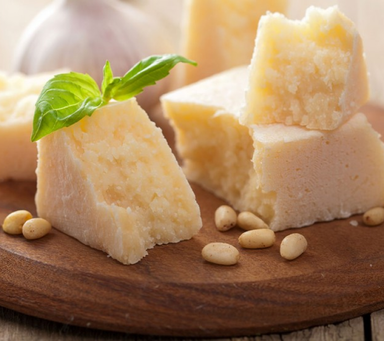

Ranking the top 9 different types of cheeses based on, taste, consistency, and diversity (different uses, etc...).

9.Swiss Cheese/Emmental
Swiss is excellent on burgers and is probably 11th on my best burger toppings list. It is really nice on charcuterie boards and pairs really really nicely with fruits and breads.
8.Pepper Jack
Much more distinct flavor than swiss which lets it stand out more by itself but isn’t as good on charcuterie boards as it can be somewhat overpowering.

7.Gouda
Gouda is very solid all around some would say it’s very gouda, it excells on a charcuterie board but I know for a fact I’ve stood in front of my refrigerator and eaten half a block of this before too; though I didn’t feel very gouda after. *Bonus points for the name.
6.Manchego
Manchego has a really nice flavor which isn’t too over powering but it’s flavor is definintly better than that of the traditional swiss cheese. It’s flavor in and of itself also pairs better with things than a pepper jack.
5.Pecorino
There isn’t much of a difference between this and parmesean, the only difference being pecorino comes from a sheeps milk and parmesean from a cow. There is enough of a difference though that there are cheeses that fall in between them. *I’ll talk more about it’s qualities in the parmesean ranking.
4.Feta
A very very versitile cheese, it’s exceptional on salads. It has a really nice flavor that compliments almost any salad. It loses points for being eaten by itself and I don’t know that I’ve ever seen it on a charcuterie board before. Alhough I points for the brine it’s kept in that’s cool. I know I said it’s not as good as other’s for being eaten by itself, I do recall eating an entire container of this in front of my fridge.
3. Queso Blanco
Now I know that this refers to a lot of different types of cheeses, but whenever a cheese has this name it is always incredible. Incredible amount of points for versatility in that regard. Although some points are lost on consistency; it’s consistently good, it just doesn’t always have a consistent flavor or texture. Goes with a lot of different things too, and a little sprinkle of this on any mexican dish multiplies that dish tenfold.

2.Parmesean/Parmegiano Regiano
These two names often refer to the same thing but when they aren’t they are very very similar so I grouped them together. This cheese is very versatile, and a great complimentary player, salad’s, pastas, charcuterie boards. It elevate everything. I can also eat a lot of this by itself too, a little grated parmesean 5 minutes before dinner is ready, is really really nice.
1.Mozzarella
Literally goes with everything, salads, pizzas, charcuterie boards, anything. Second in that category only to parmesean. It does not lose points in the stand alone category, I have eaten multiple things (I don’t know what you would call that balls I guess) of Mozzarella before. There’s nothing bad about mozarella its just mozz a rella good.